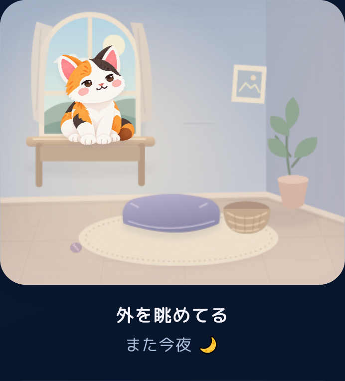
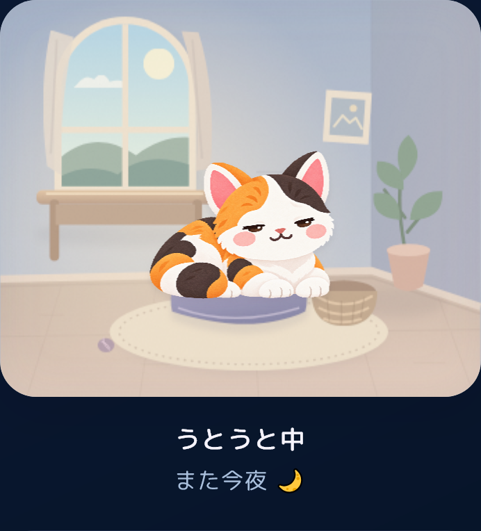
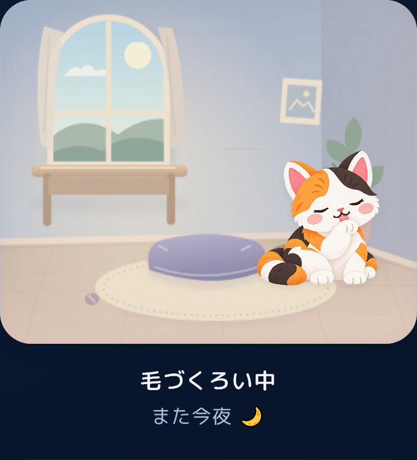
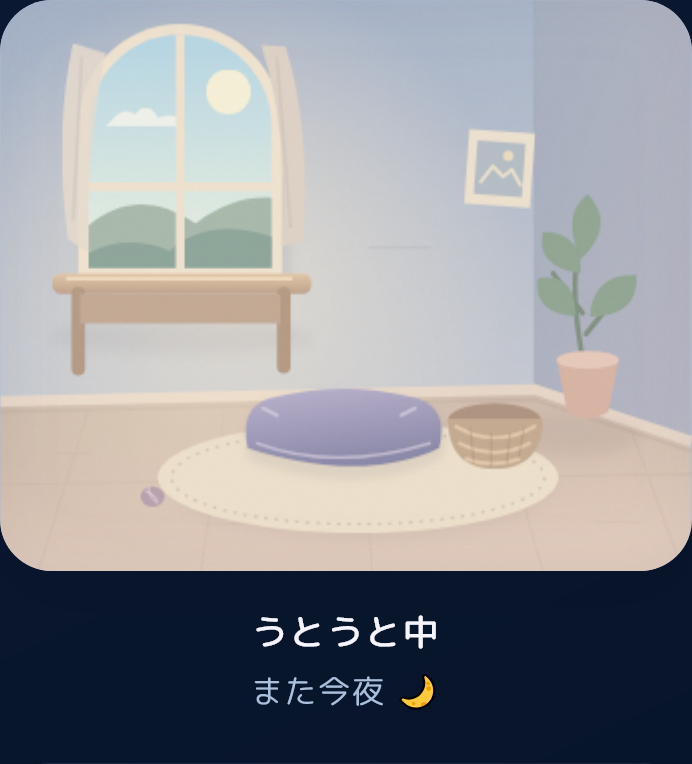

やわらかな光のそばで。

いつもの場所で、ひとやすみ。

今日は、ここが落ち着くみたい。

しばらくしたら、自然に帰ってきます。
居場所 · 30〜90分ごと気分・仕草は10〜30分ごと。
留守 · 1日0〜2回5〜15分で、そっと帰宅。
日付と時刻で、同じ状態に再読み込みでも予定は変わりません。
16種の猫が、それぞれの部屋で。
既存の猫画像をそのまま使用したローカル試作。画像の描き直し・本番DB変更・commit・pushは行っていません。